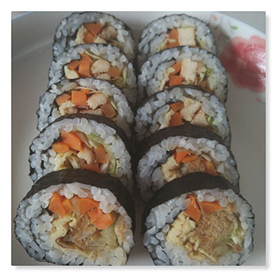
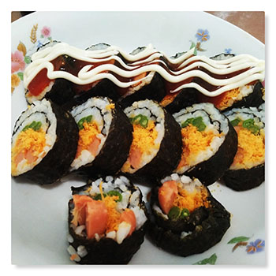

1.米饭。。 图中挖去的部分大概就是一次的量
2.铺平
3.把菜放到米饭上 这个用的是煮过的胡萝卜条、 生菜、煎鸡肉条和肉松
4.卷起来。。这里一定要捏紧捏紧捏紧
5.这个刀是切寿司专用的。。 还不错挺好用。。 如果没有可以用家里最薄的刀。。 不好切的话可以沾一下水再切。。

6.摆盘 摆的越平。。待会能沾到的酱越多
7.啦啦啦挤上番茄酱和沙拉酱 系不系感觉和外边卖的差不多了

8.里边的菜也可以换成别的 比如这个是火腿+肉松+煮熟的豆角